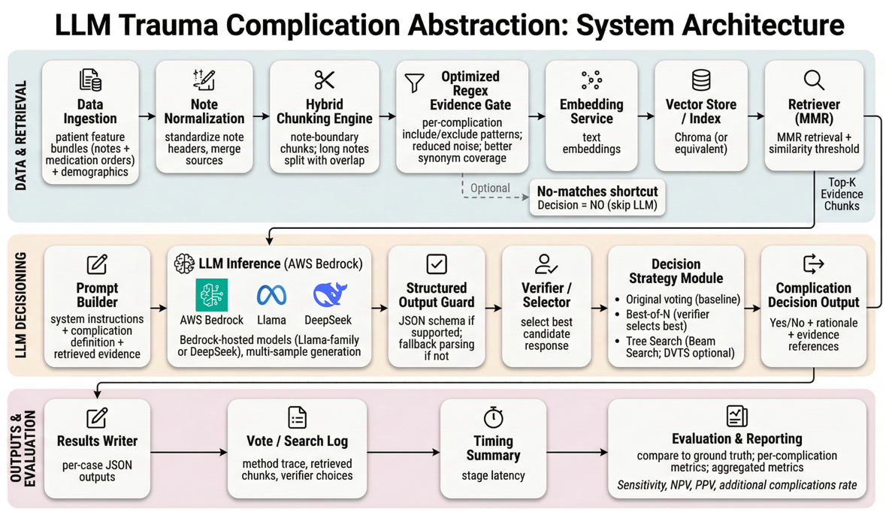

1. Introduction
1.1 Motivation
- Maintaining healthcare trauma quality standards are costly but important. It is incredibly important to measure and improve hospital outcomes, but large hospitals need to employ about 5 registrars specifically for this, which is costly.
- Large Language Models (LLMs) present us with an opportunity to reduce the cost to hospitals for these outputs.
- We believe that hospital care quality would substantially improve if they had such information and therefore, believed that this project would be especially useful to hospital staff.
1.2 At A Glance
- We tested our LLMs ability to label long medical notes for American of Surgeons Trauma Quality Improvement Program (or ACS TQIP) taken over a 22 month span between 2023 to 2024.
- Since these notes tended to be long, we obtained relevant notes through a two-step filtration process of first using fuzzy matching with regular expressions and then performing Retrieval Augmented Generation (RAG). This significantly lowered the number of notes sent to the LLM.
- We tested out several test-time inference techniques to improve the LLMs' output performance including Chain of Thought with a reward model, beam search, diverse verifier tree search (DVTS).
- Unfortunately, None of the techniques tried thus far are likely to be successful enough to replace registrars. We hope future work can improve our overall performance for each of these methods.
Methods

Our primary outcome was agreement between the LLM and manual reviews performed by the institution's trauma registry. We assessed sensitivity, negative predictive value (NPV), positive predictive value (PPV), and frequency of complications identified by the LLM but not the registrar. Additionally, a subset of cases and output from the LLM was reviewed and validated by clinical subject matter experts (SMEs) via manual chart review. Cases in which the LLM missed complications that the human registrars identified were specifically included in this subset. Rationale provided by the LLM facilitated targeted reviews and verification of output as true or false.
Results
As a simple smoke test for AWS Bedrock with new embedding and LLMs, here is the pre-Embedding and pre-LLM optimization (raw) of experiment on 20 patient features (During extended runs we encountered several technical issues that required additional time to diagnose and stabilize, therefore we used a subset of 20 samples as a preliminary peek at the system behavior):
Conclusion
Overall, our progress is still slightly behind the original timeline, but we have completed the most difficult portion of the work. Next, our direction is clear. We will first optimize the current LLM setup and align its parameters with our prior LLaMA-based experiments to achieve comparable performance. We will then run ablation studies by swapping in the new components we proposed, so we can isolate their effects and draw concrete conclusions.

First image description.

Second image description.

Third image description.